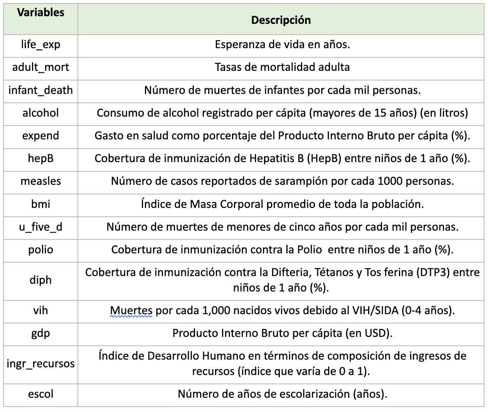
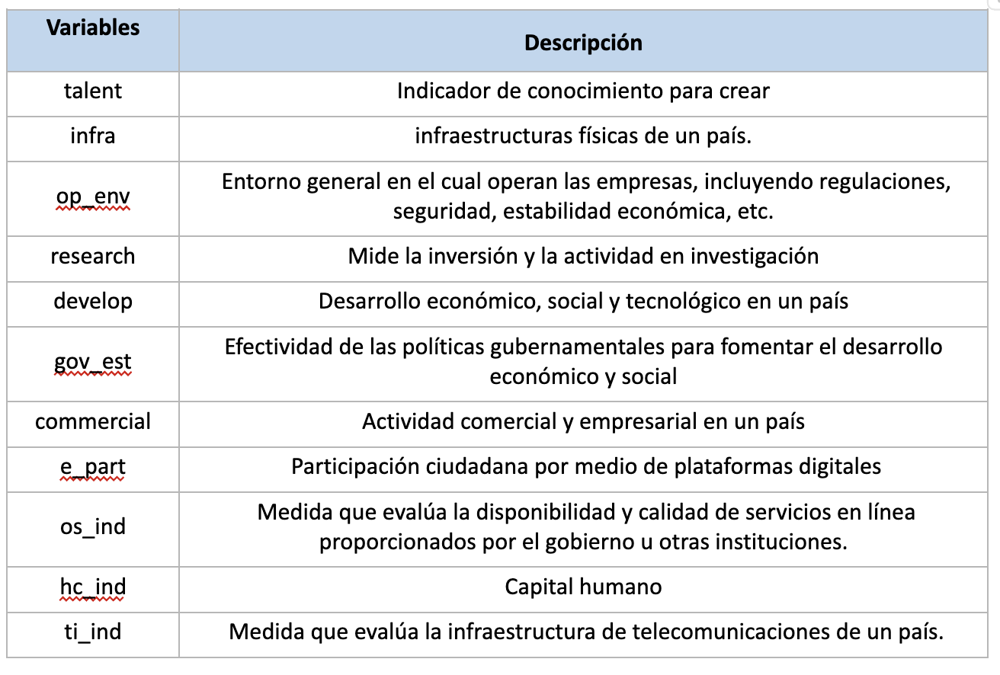
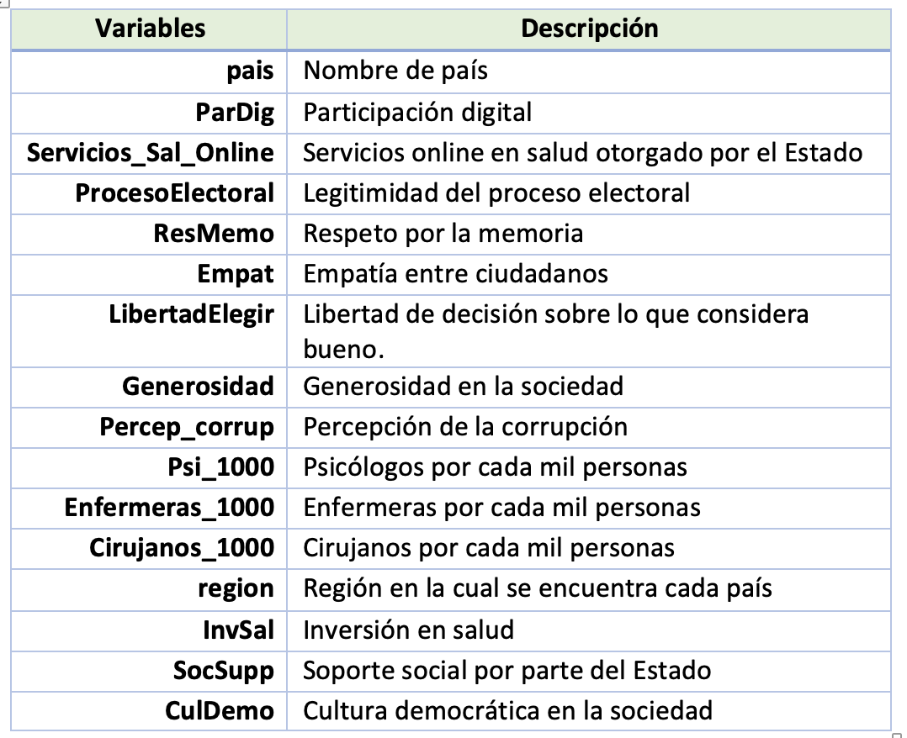

Ejercicios

Bases de datos:
Todas las bases a usar se encuentran en el siguiente link.
Análisis factorial:
Caso 1: Exploratorio
Usar base AFE-Caso1.xlsx

Presente la Matriz de correlaciones y comente los resultados. Hint: las variables son numéricas, no son ordinales
Verifique los prerrequisitos (Factorización y Matriz de identidad). Comente los resultados.
Analice los dos métodos que recomiendan el n° de factores y comente los resultados
Determine los factores según el número sugerido por los autovalues y solicite componentes
Evalúe el Análisis Factorial Exploratorio solicitado
Confirmatorio
Caso 2: Confirmatorio
Usar base AFC-Caso2.xlsx

Presente la Matriz de correlaciones. (1pto). Hint: las variables son numéricas, no ordinales.
Verifique los prerrequisitos (Factorización y Matriz de identidad). Comente los resultados
Analice los dos métodos que recomiendan el n° de factores y comente los resultados
Determine los factores según el número sugerido por los autovalues y solicite componentes
Interprete diagrama del AFC
Caso 3: Ambos
Usar Fact-Caso3.xlsx

Presente la Matriz de correlaciones en formato gráfico y comente los resultados preliminares.
Verifique los dos prerrequisitos que demuestran que la base de datos es adecuada para aplicar la técnica de factoriales. Comente los resultados.
Determine el número de factoriales y sustente su elección
Solicite el número de factores, genere gráfico y comente el resultado de las cargas factoriales. Hint: rotate = “varimax”,fm=“minres”. Hint :cutoff=0.5.
A lo largo del análisis Ud cree que puede existir un modelo más acertado desde el campo de las ciencias sociales. Sustente y solicite una nueva composición de factores
A partir de su propuesta (anterior pregunta) guarde y estandarice los componentes en el rango de 0-100. Interprete los resultados de cada factor usando estadísticos descriptivos. Hint: Media, mediana, desviación estándard, max y min (usar tidyverse)
¿Cuál es la posición de Perú en comparación del resto de países en América Latina? Elija solo un indicador de los creados previamente. Hint: Usar descriptivos LATAM